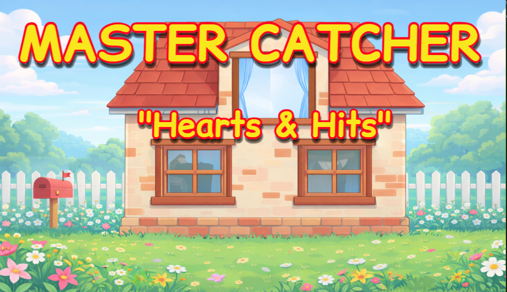
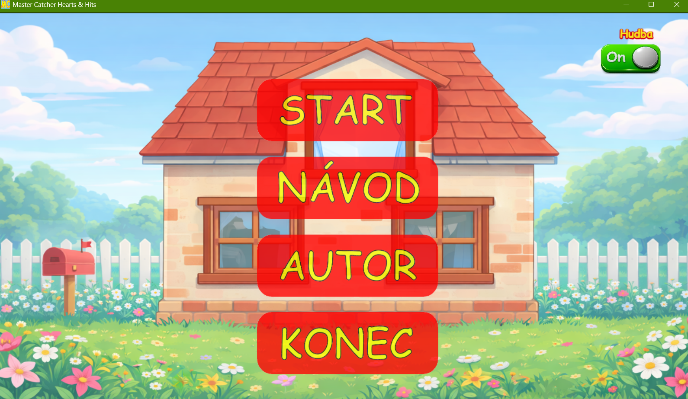
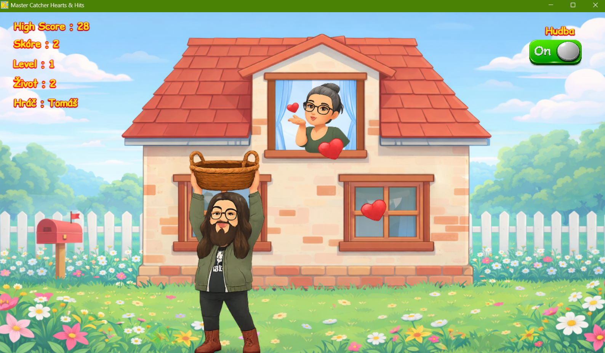
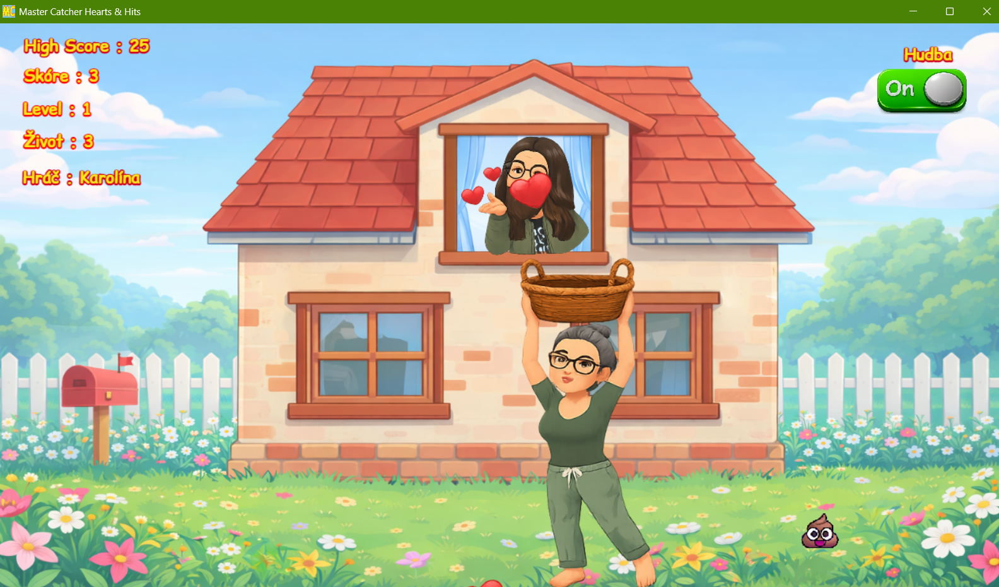

Master Catcher
Jednoduchá chytací hra, ve které sbíráš body a snažíš se překonat své skóre.




O hře
Master Catcher je moje vlastní hra, ve které hráč chytá padající objekty, získává body a snaží se vydržet co nejdéle. Chtěl jsem vytvořit jednoduchou, ale zábavnou hru, kterou si může člověk rychle zapnout a hned hrát.
Vlastnosti hry
- rychlá a jednoduchá hratelnost
- sbírání bodů
- postupné zlepšování vlastního skóre
- vlastní grafické zpracování a styl